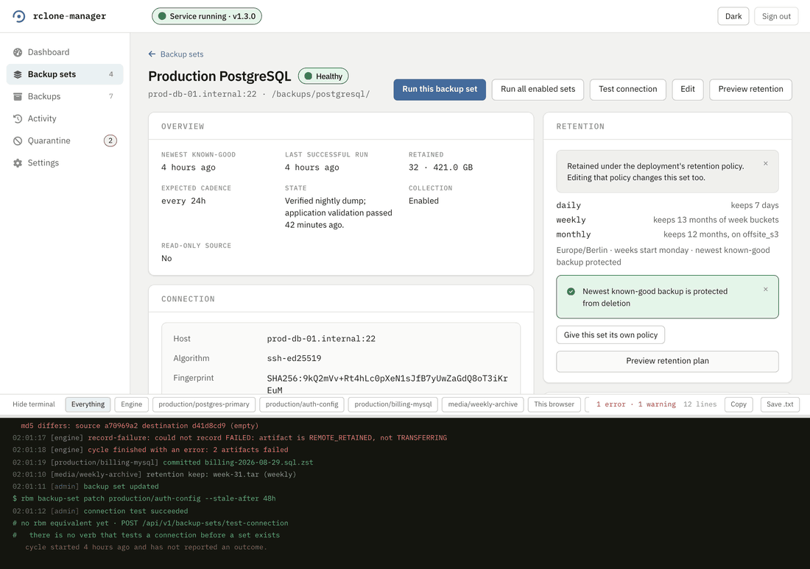
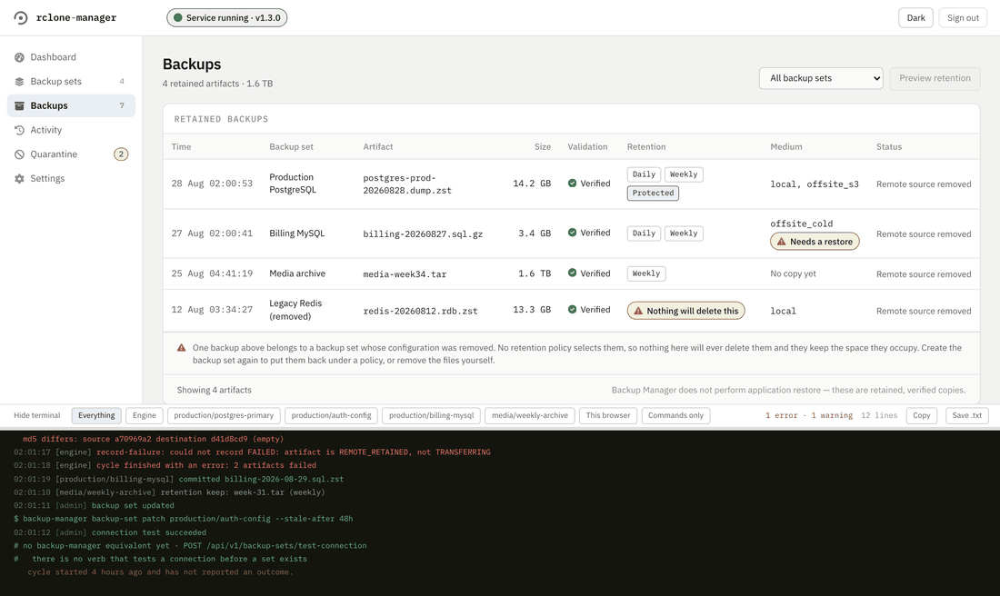
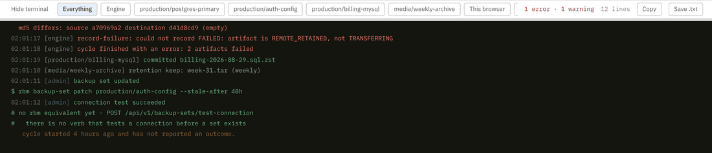
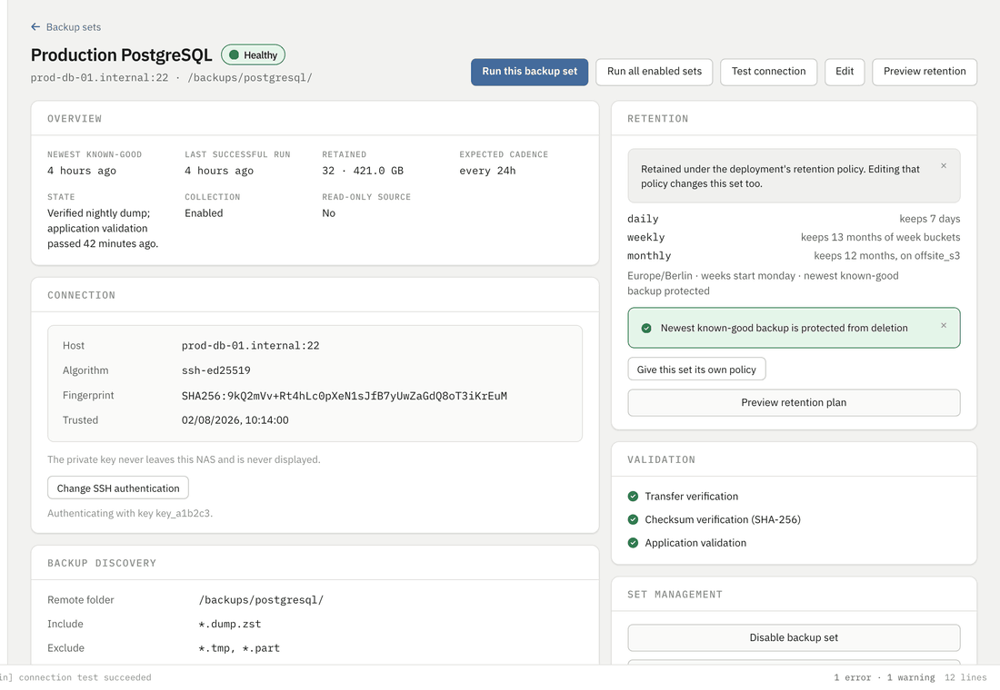
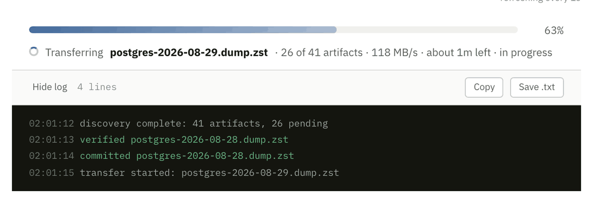
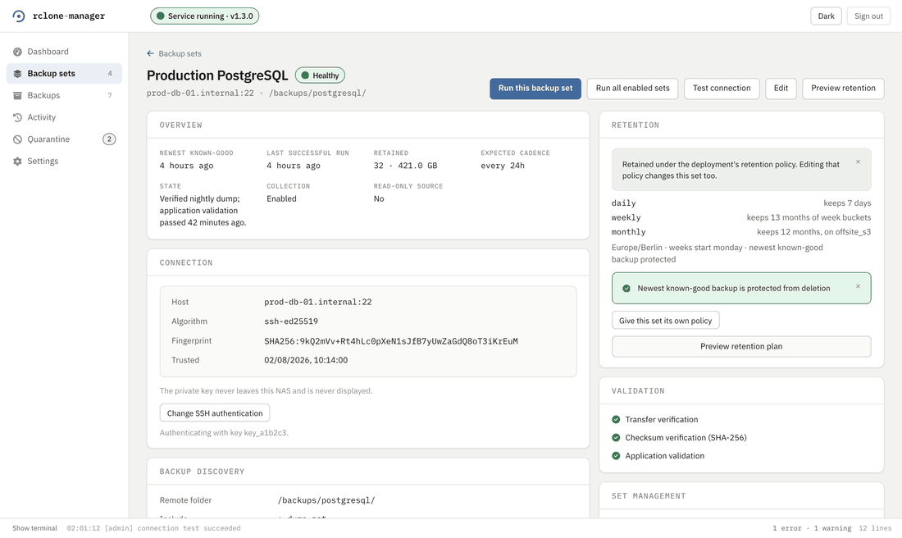
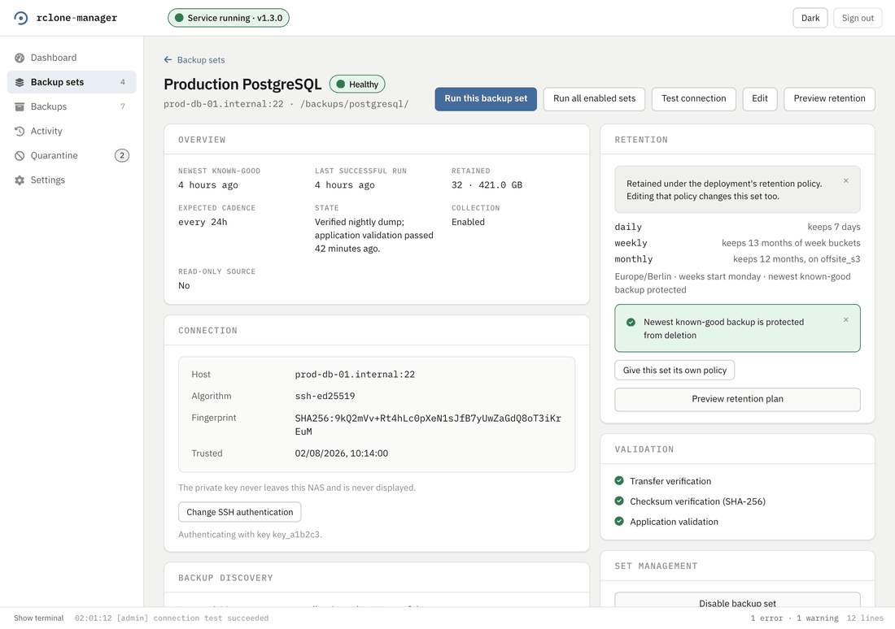
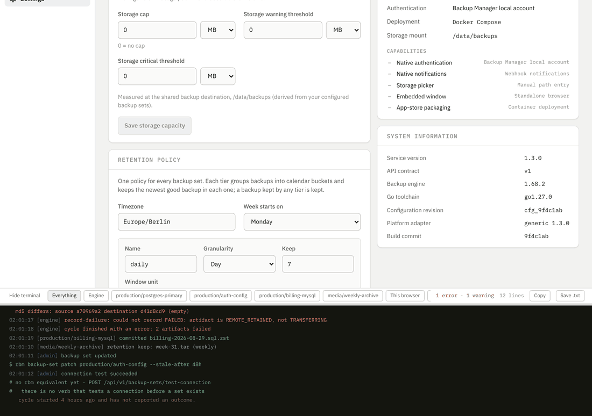

The web interface, in motion
Most of what 0.3.3 added is a thing that happens rather than a thing that sits still, so most of this page moves. A terminal that stays put while the page scrolls, a filter that takes lines away, a theme that changes a whole window at once and a button that says what it did are all claims about behaviour, and a screenshot of any of them is a screenshot of the moment before or the moment after.
Every clip below drives ui/shared's development server, whose API is the in-memory fixture in src/api/mock.ts. The component tree, the layout, the copy and the interaction are the real product's. The data is not: hostnames, fingerprints, sizes and counts are fixtures.
They are deliberately never recorded against a running deployment, and that constraint is older than the clips. A capture script presses real buttons, and some of these buttons remove a storage destination or start a backup run. There is no address for these to point at, by design. How they are recorded is at the bottom.
The terminal at the bottom of every page
There is a log panel docked to the bottom of the browser window on every signed-in page. It answers one question: what has this deployment done recently, including the thing I just clicked. It reads the engine's own buffers, so two people watching one NAS see the same lines in the same order with the same sequence numbers and can quote a timestamp at each other.
It is pinned to the window, not to the end of the document, and that distinction is the whole of #617. In flow it rode the bottom of the page, so on anything longer than a screen the always-on panel had scrolled out of view and only appeared once you had already got to the bottom, which is the opposite of what an always-on panel is for. Watch the page move under it.

Collapsing it does not collapse it to nothing. The bar keeps the newest line and a count of what has gone wrong, because a terminal that collapses to a blank strip teaches an operator to stop opening it. Whether it is open, how tall it is and which filter is on are this browser's business and live in localStorage; the lines themselves are the deployment's.

Filtering it
One deployment runs several backup sets and they all write into one buffer. The chips decide what is drawn, never what is kept, so clearing a filter brings everything back. Engine leaves the lines that belong to no single set. A set's own id leaves that set's. Commands only is the interesting one: it reduces the panel to the actions somebody took through the API, each with the command line it was equivalent to.

The This browser chip always draws an empty log. Notices this browser writes (a run you started, a refusal that never reached the engine) go into state/browserNotices, and ActivityDock never reads that node; only SetActivityPanel does. So a run started from a button lands in the banner and in that set's own panel, and never in the docked terminal. useRunControls' own doc says that node is "the seam the global terminal and the per-set terminal read", which is half true.
The filter row clips below about 1300px. The chips sit in a wrapping flex row inside a bar with a fixed 32px height, so as soon as they need a second line the second line is cut off and those chips cannot be clicked. Four backup sets and a 1280px window is enough to do it, and a deployment with more sets will do it at any width. The clips above are recorded at 1440px, where the row still fits.
Starting a run, and reading the answer
Both run buttons are real now. Before #597 two of them called the API with no error handler, an empty configuration revision and no idempotency key, and the third had no handler at all, so a refusal from the destructive gate, a stale revision, a malformed request and a dead engine were all pixel-identical to a button that did nothing.
What comes back is a notice with four parts, and each part is there for a reason. It states an outcome rather than leaving one to be inferred. It says what to do about it when there is something to do. It names the command the press was equivalent to, copy-pasteable exactly as written, which matters most on a refusal, because while the destructive gate is shut that command is the only remaining way to start the backup that was just refused. And it has a close control, which is #620: a banner you have read and cannot put away is a banner that pushes the page down forever.

The set's own page has its own activity panel, which is where a run you started does show up. It is marked [browser], always, because "the engine said this" and "your browser asked for this" are different facts and only one of them is evidence about the NAS.

Seeing what retention would do
A preview is a read and deletes nothing. It lists every artifact the policy has an opinion about, on both sides, with the reason beside each one, and the reasons are the engine's own words rather than something the page worked out again: protected as the newest known-good, sibling-prefix directory found at the computed path; refusing to delete. A refusal gets its own group, because "I decided not to delete this and here is why" is a different answer from "this was not selected".

Editing a set, and getting out of it
Opening the editor takes a hold on that backup set. The hold is a real thing on the server with a command of its own, and it exists so a cycle does not start against a set somebody is halfway through changing. Which means leaving the editor has to give the hold back, and before #591 there was a back link and no way to discard what you had typed, so an operator who opened the form just to read it walked away leaving the set held.

Dark mode
The defect #618 fixed was not that dark mode looked bad. It was that the application painted its own surfaces dark and left every native control at the browser's default, so a select, a number input and a file field drew black text on a dark field. It read correctly in light mode, where the browser's default happens to match, which is why it survived so long.

The icons
Everything drawn as an icon is Font Awesome Free 6.7.2, compiled into the bundle as paths rather than fetched, under CC-BY-4.0 and reproduced unmodified. Before #621 they were Unicode glyphs, which means the navigation looked different on every operating system and sometimes rendered as an emoji. The typeface went the same way in #631: IBM Plex is vendored into the image and served from it, so an isolated deployment with no route to Google Fonts keeps the face it was designed in instead of silently falling back.
How these were recorded
Every clip on this site comes out of docs/site/tools/, and one command re-records a page's worth:
node docs/site/tools/capture-web-ui.mjsA clip is not a video of a browser. It is a list of frames with how long to hold each one, captured between real interactions with the running application. That is a deliberate choice and it buys three things. A video samples at a fixed rate, so how many frames a step gets depends on how fast the machine ran it, and the same script produces a different file every time. A video spends most of its frames on nothing happening, which is most of its bytes. And a video gives a reader no time on the frame that matters, because these interactions happen at typing speed and are being read by somebody trying to see what changed.
So the same script produces the same frame count with the same durations on any machine, and a re-record differs only where the application's own rendering differs. The clock, the timezone, the locale and the port the development server runs on are all pinned for the same reason: every time on screen goes through toLocaleTimeString and the terminal's first line is built from the address the page was loaded from, so without pinning them a re-record differs in every frame carrying a stamp or an address.
That is not the same as pixel-identical, and I would rather name the exception than claim otherwise: a panel the application animates on its own, such as the spinner and progress bar on a running backup set, is caught at whatever phase it happened to be in. Those clips move by a few kilobytes between runs. Everything that was moving for no reason has stopped.
The eight clips on this page come to about 1.4 MB between them, and they are loaded lazily. That budget is why the palette is 64 colours and why dithering is off: this is flat interface with hard text edges, and a dither pattern across a solid panel is both uglier and several times larger.